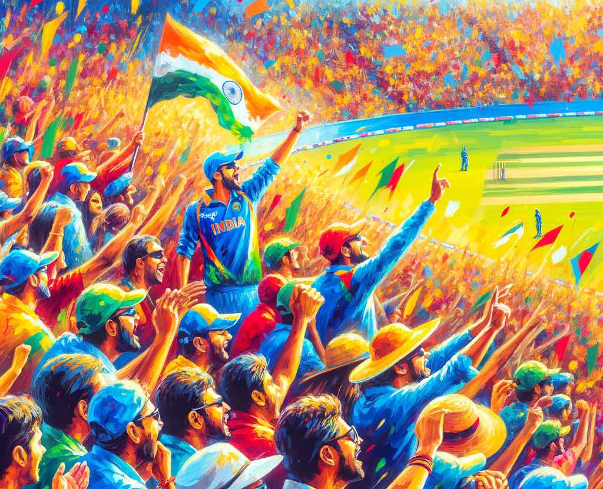
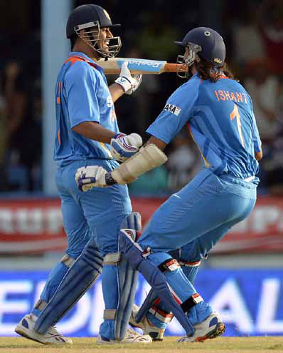
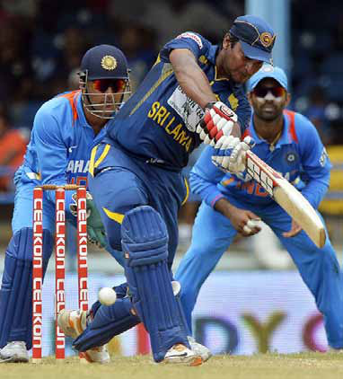
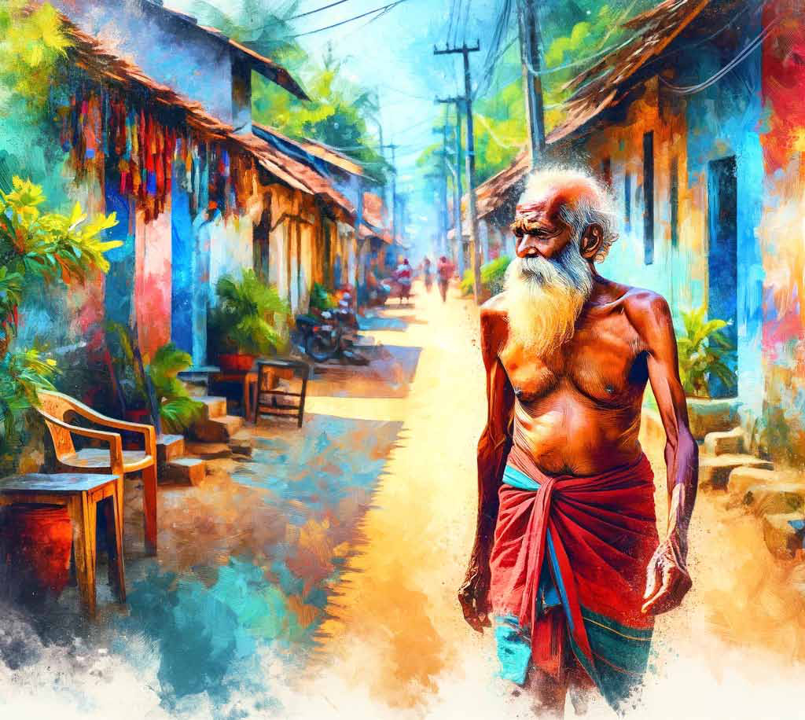
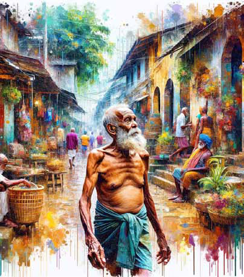
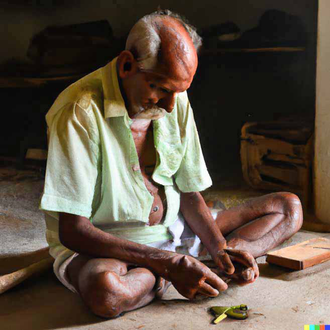
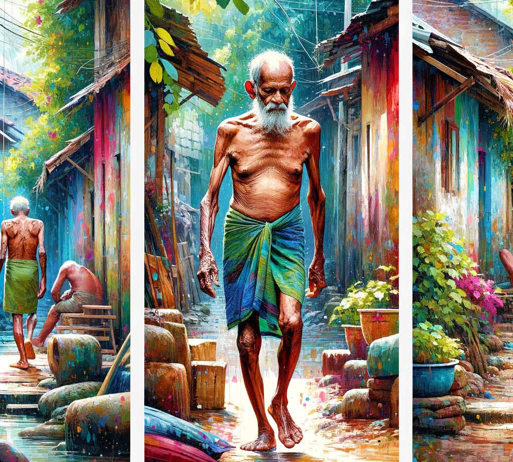
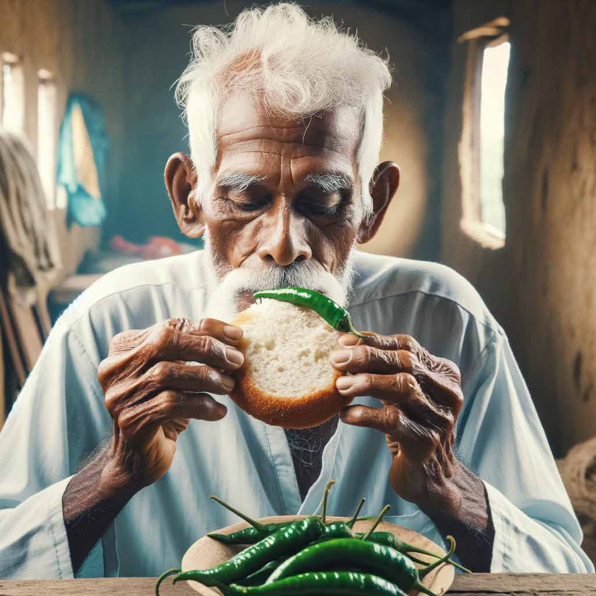
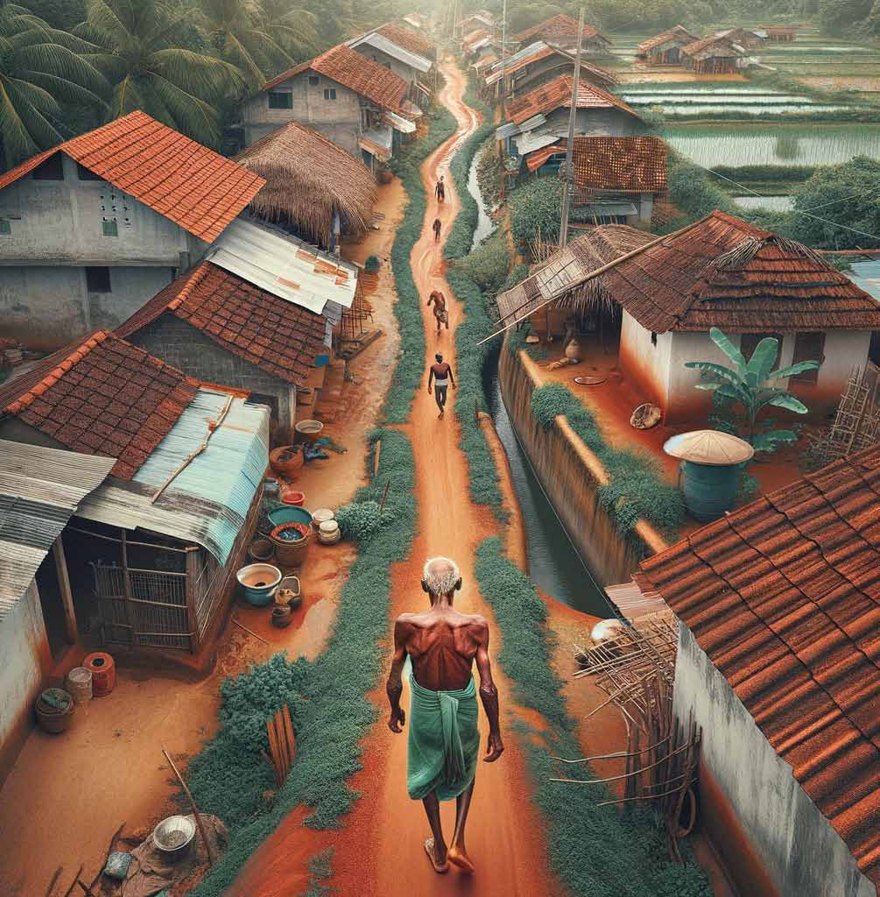

The ODI that Had It All:
The ODI that Had It All:
Jaffna Monitor hellojaffnamonitor@gmail.com 42 The ODI that Had It All: T he rapidly changing landscape of Cricket has unleashed many thrills. Yet amidst this tectonic shift, the old-fashioned lure of ODI Cricket has been challenged. A 50-over match, offering an even tussle between bat and ball, is a beauty in cricket that remains unmatched. For many of us who followed the game pre-2015 mainly, the nostalgia of cult classics is a feel that's hard to describe. Today, we will revisit one such Sri Lanka-India classic from 2013. In mid-2013, Sri Lanka was facing India in the final of a triangular series in the West Indies. India was the reigning Champions Trophy winner, crowned merely weeks before. They had secured their place over Sri Lanka in the semi-finals. Both teams had won one game each against each other in this tournament. India's main man, MS Dhoni, was back for the final. The pitch at Port of Spain wasn't the usual flat track but one that was destined to test both batters and bowlers. Sri Lanka batting first found it hard to push the pedal. Tharanga and Mahela, who had made the Indian attack look like a secondary school attack only days before, perished without much noise in India-Sri Lanka 2013 Revisited By: Dr. Aravinthan Arunthavanathan Sports


Jaffna Monitor hellojaffnamonitor@gmail.com 43 the game that mattered. With two early wickets down, it was time for Sri Lanka's superstar Sangakkara to make his mark. At this juncture, Sangakkara was changing the game in ODIs. He was morphing into a white ball monster too. The signs were obvious. A scrumptious match-winning ton at the Oval against England a few weeks prior was an indicator. But on this day, grit and grind were the requirements. Sangakkara, in partnership with Thirimanne, obliged. From 49-2, the pair steered Sri Lanka to 171-2. With a well-set launch pad, Sri Lanka was placed to boss the game. With the track crumbling, 240 was surely going to be a match-winning score. Thirimanne's dismissal, followed by a miscalculation from Sangakkara immediately afterwards in a quest to score quick runs, opened the floodgates for India. Wickets tumbled like nine pins, unable to withstand Ravi Jadeja's relentless bowling. Sri Lanka lost the last eight wickets for 30 runs, ending up with a paltry 201. The late-order collapse highlighted the value of Sangakkara's skill. His 71 off 100 wasn't a knock that many would remember, but it was a display of skill, fitness, and most importantly, the ability to rise when it mattered amidst a never-ending glut of games. 202 was supposed to be a cakewalk for the mighty Indian lineup. However, it wasn't to be. Indian innings followed the same pattern as Sri Lanka. Thanks to some excellent deliveries, Dhawan, in top form, and Kohli, Sri Lanka's newfound nemesis, were quickly dismissed. It was the turn of Rohit, who was turning everything he touched into gold, having led Mumbai to their first title win in IPL and establishing himself as an opener to drive India ahead. Partnering him was Dinesh Karthick, who, on his own, was in the middle of a purple patch. As the duo steadied the ship through old-fashioned accumulation, Sri Lanka's Test star Herath intervened in style, snaring Karthik. Raina and Rohit dashed any hopes of a Sri Lankan comeback, steering India back on track. It was a critical phase for Raina as Kohli had led India in MS Dhoni's absence earlier, leading to even an ugly spat in the field with Jadeja revolving around the snub. However, nothing mattered as India seemed to have cracked the code in the chase. Again, it was Herath's turn as he clean-bowled Rohit with a delivery that was kept low. Immediately afterwards, Raina played a loose drive, edging the ball to Sangakkara. Suddenly, the Sri Lankan hopes were alive. Yet, India boasted a strong lower order. The game was in the balance. Any hope of a lower-order resurgence was thwarted by the brilliance of Herath. A Test match specialist was turning the heat on as he trapped Jadeja and Ashwin within a blink of an eye, pushing India to 152 for 7 with only

Jaffna Monitor hellojaffnamonitor@gmail.com 44 Dhoni left. India inched slowly towards the target with the stubbornness of Bhuvaneswar Kumar and Vinay Kumar alongside Dhoni. However, the tail-enders didn't last long, and both were dismissed, with India still 20 runs short of victory. To make matters worse for India, Dhoni was literally batting on one leg and wasn't finding it easy to run. All things combined, it looked like Ishant Sharma played out an over to set Dhoni up for a final over climax. From needing 20 from 23 balls, the equation was down to 15 off 5, with Eranga in action. The nature of the track meant that Malinga was taken away for runs and wasn't available for the last over. In true Dhoni style, Dhoni struck 6,4,6 to take India home without breaking sweat. The bowler worked for the man with the Midas touch, taking it deep and pressurising. As for Sri Lanka, it was so close yet so far. The Indo- Lanka rivalry was at its peak, characterised by high-quality cricket during this phase, making a final loss to India particularly painful. Despite the outcome or the context, the title clash at Port of Spain was a game to cherish. It was a game where old-fashioned ODI batting and consistent bowling-sustaining pressure were rewarded compared to the mainstream slam-back styles. Dhoni's determination triumphed over Sanga's grit, and India prevailed over Sri Lanka in yet another final. This game would rarely be recollected as a classic. Yet, for those who stayed up late to watch on either side of the Palk Strait, it remains a game that signified the beauty of ODI cricket, a quality often missed in the current landscape of the sport. Dr. Aravinthan Arunthavanathan is a multi-talented professional, renowned in both medicine and cricket writing. A graduate of Colombo Medical Faculty, he contributes significantly to the pharmaceutical industry, focusing on Medical Marketing and Business Development. He is also known in Sri Lanka as a cricket writer, particularly for his Twitter analyses @Cricket_decoded. Additionally, he is a proficient public speaker with interests in cognitive sciences, medical, and management education. His blend of scientific knowledge, sports insight, and communication skills distinguishes him in both medical and sports domains.

Jaffna Monitor hellojaffnamonitor@gmail.com 45 Story T he cold wind assaulted Kandappu’s body. He was walking briskly, swinging his arms in wide arcs. The wind was caking his shirtless body with copious amounts of Iṇuvil’s famed fine red dust. A chest that looked like the lifeforce had departed from its cage; a slightly oversized head that seemed to have been hastily glued on to this chest; sunken eyes; a physique that would, on any government servant, instantly merit a nvitation Translated from the original Tamil short story aḷaippu (miog;G) from the 1964 collection of short stories titled akkā (mf;fh) by A. Muttulingam (m.Kj;Jypq;fk;) Translated by: Eḻuttukkiṉiyavaṉ (vOj;Jf;fpdpatd;) I

Jaffna Monitor
hellojaffnamonitor@gmail.com
46
‘medical certificate;’ all together, the sight of
Kandappu’s forceful gait on that desolated
road did indeed have the potential to inspire a
bit of terror.
Surprisingly, a bus came into view at a
distance. “Perhaps take the bus just for
today?” Kandappu was tempted. His hands
unconsciously reached for the knot at his hip.
The seventeen cents that had been hiding
there for three days, reeked of sweat.
- if the boss is going to pay up today … …
at least I can settle the small loans somehow.
I’ve got to pay back at Suppaiyā’s shop. He
will stake out at home waiting for me … these
last four days have been fasting days … mmm
… I am leaving my little girl to fend off the
lenders … chee … what an existence …
- there is no sugar for morning tea … …
for how long can one manage to drink tea
with a piece of jaggery? … mmm … I am
increasingly feeling weaker with each passing
day … must buy some iron tablets from the
dispensary … how dextrous I was when I was
younger … … now, as I age, my hand is no
longer flexible.
As he approached the Muniyappa temple,
Kandappu’s hand instinctively reached for the
piece of cloth he was wearing on his shoulder.
Without missing a step, he brought his hands
together at his chest in worshiping position
and called out aloud to the deity,” appaṉē
muṉiyappā”.
- Why, if I have a boy to help me at work
today, I could easily roll sixty, seventy …
… I could bring the little boy along. But my
heart wouldn’t listen … at least he should get
a basic education … the rascal … yesterday
he broke his slate … he is not going to learn
… maybe I should drag him along to train
him at work … no … he shouldn’t end up in
this godforsaken profession …. even dying is
better than this … if he learns this miserable
trade, he will resign himself to it.
… chee! I did get the job as a railway
doorman. I listened to my angel of misfortune
and let my chance for a government job slip
away! I deserve to be beaten with a slipper…
As he passed the Raja Mill Lane, Kandappu
instinctively scanned the horizon. A cassava
seller was passing the junction towards him.
He thought “She can’t see me” and crouched
down to sit on his haunches. A lantana tree
tickled his thigh. He kept playing with the
leaves of a touch-me-not shrub.
His body shivered for some reason.
As he passed the house of the pariyāri, the
traditional āyurvêda doctor, he thought of his
wife again. “Hospital medicine hasn’t made
her better … I must take her to the Vēlaṇai
pariyāri…”
He felt a little dizzy. Only when he turned
into the gravel and limestone Māththaṉai

Jaffna Monitor hellojaffnamonitor@gmail.com 47 lane did he start to appreciate the asphalt road that he just left. Thuraiappā and Kandaiya were on bicycles ahead of him. “Had the wife not fallen ill, I wouldn’t have had to sell the bicycle … When am I going to acquire a bicycle again?” “Hello, it looks like you haven’t opened the shop yet …” “Yes aṇṇai… I was a little late in waking up today.” ’s eldest daughter was sweeping their front yard. — Isn’t my Pūraṇam the same age as this girl? But she is a tad taller … has somehow succeeded in taking care of his daughter’s matter … I, too, will have to find a match for Pūraṇam … But I don’t have anything to lavish on her as dowry… just her luck, she wasn’t born into a home that she deserved to be born into… … that boy Sanmugam has learned to drive a car … … he could be a good match … … but who knows how much Vayiravaṉ would demand?

Jaffna Monitor hellojaffnamonitor@gmail.com 48
Although no one spent any money to hang huge signboards at those small Kokuvil cigar factory sheds, those in the know can identify cigar sheds without any difficulty whatsoever. If a strong smell wafts through the tired commiphora trees that line fences along a lane, one can guess that a cigar shed is nearby. As he pushed the door open, he could hear Murukēsu’s voice. …mmm… looks like I am late again today … he hung his piece of cloth on the clothesline, grabbed some tobacco clippings and started loosening them in his palms. They were coarse. He thought of sprinkling some kōda, the concoction made by boiling tobacco stems for several days, and then mixed with arrack, sugar, and spices to cure them but was afraid of the potential for a weight increase. “What is it, Murukēsu… … it is “diamond” today, right?” “No aṇṇan! Now there is a demand for ‘brilliant’; that is what you, too, will be doing today.” Kandappu’s stomach churned. He never quite got used to this new size cigar type with fat tails.

Jaffna Monitor hellojaffnamonitor@gmail.com 49 “… … Thambi Suppiramaṇiyam … … throw me a thread spool, child… …” “Here Kandappu … … watch out for today’s size … … it can easily go wrong …. I have put out four wrapper leaves for you … yesterday, only when I was packing your cigar bundles that I noticed … … your knots had come loose and the rolled cigar had opened up at both ends - just keep your eyes open, ok?” When he rolled his first cigar and looked for the thread on his right thigh to close the cigar and tie the knot, his hand started shaking again … … he found himself mumbling something.
Even by the time that the twelve o’clock train went past, Kandappu’s hands hadn’t gotten used to the task. The tobacco clippings had turned coarse in the heat. The inner leaf broke as soon as one tried to open it. The wrapper leaf didn’t stay put when he tied it up and the cigar ends immediately opened back up. Perhaps he would manage a hundred and thirty or a hundred and forty. When the cutter - just a young boy, but quite skilled and was the right hand of the boss - came by and started trimming the rolled cigars, Kandappu started to be nervous. “What is this man, you have blindly stuffed it full of tobacco clipping as if you are filling a coconut sack. It is sagging. Look here everyone … …!” Kandappu’s cigar was paraded around for all to inspect. He died of embarrassment and shame. Mmm… …what a shameless existence! When the bread vendor came by at lunch time, Kandappu bought half a pound as usual, and bit into it accompanied by the fire from the two green chillies that he had secretly plucked off from his boss’ backyard. When the twisted bread descended through his parched throat with great difficulty, his weak eyes watered. Despite his hunger, he couldn’t eat all that bread. That day the Mahābhāratha chapter on Abhimaṉyu’s torture was being read out aloud during the story session at the cigar shed. When the story reached the place where everyone surrounded the child Abhimanyu in a circular formation and Abhimaṉyu cried out “Father!”, Kandappu was close to tears. He felt as if the entire world were Kauravas, the clan who surrounded the young unarmed Abhimaṉyu, and he faced them alone and helpless. A torturous grief enveloped his heart. At the end of the day, Kandappu waited for the boss to settle his accounts. “Look Kandappu, look at this… … … if you do a messy job like this, who am I going to palm it off on to .. … after four days, they are going to send it right back to me.” When the boss put the cigar back into the stock, he whispered, although within Kandappu’s earshot, “Have all the other cigar sheds in the village burned down? …if he wants to stick with me … …” The pillar holding up the cigar shed, which he has been accustomed to for thirty years, the bales of tobacco leaves, the iron box, the pile of dried tobacco stalks; everything was a blur in his eyes. He stood up like a machine to throw the stems of wrapping leaves away. A piece of string dragged along with him, steadfastly stuck to
Jaffna Monitor hellojaffnamonitor@gmail.com 50 his vēṭṭi, as if it is making fun of his sense of loyalty. When he opened the gate to step outside, the silent wail of his anguish was deafening: “must I come back in through the same gate tomorrow? Again?” Two days’ worth of ration book coupons are yet to be cut … … Mayilaṉ is going to camp out at home waiting for me … … As he passed the library, the old woman Nākammā was waiting for her usual `wee smoke’. He took the country cigar from behind his ear and offered it to her. As he neared his home, his feet refused to move. He could hear the sounds of Siṉṉāchchi coughing and Pūraṇam tearing off coconut leaves. He washed his feet by the well and stretched his legs on the veranda. He was scared to ask

Jaffna Monitor hellojaffnamonitor@gmail.com 51 Siṉṉāchchi how she was doing. The deathly silence shook him. Hunger gnawed at him. Anger towards Pūraṇam boiled up from within him. Did she notice that her appu had come home? What arrogance … … mmm. In the heat of hunger his anger was engulfing him. He gritted his teeth and waited patiently. “Appu come to eat.” He eagerly turned his head; but there was no one; it was just a hallucination. Where on earth did she go? Have I become an object of ridicule? No sooner had he peeked in the direction of the well than his anger spilled over the limit. “What is this you moron — why do you spend so much time at the well? … … who are you flirting with? … … you overgrown idiot … …” He picked up the water pot and banged it against her slender waist with all the force he could muster. “aiyō appu” she screamed. Heavy blows fell on her back. Siṉṉāchchi, who was lying down inside, moaned in a feeble voice “aiyō why on earth are you killing her?” “Satans… devils…!” “Where are you coming from you rascal.” The stunned little boy was lost for words. His fear swallowed half his words. “akkā … aunt … house … āāā!” “Rascal… are you gallivanting around from house to house all evening? … How long has it been since the evening lights were lit? … Did you study? … Is this how you study? … Dēy, is this how you are going to succeed in your studies? …” His back was turning pink. “Appu my appu. I swear on my appu. Please don’t hit me… aiyō you are hurting me. I swear on appu… … my appu … I even washed your vēṭṭi for you… I washed your vēṭṭi, appu…” He dropped what he was hiding in his hands. The fish curry he brought for his appu from his aunt’s house was blending with the soil.
Big sobs and small sobs from the inside alternated. Kandappu sat on the outer veranda wiping his sweat away. Each sob was piercing him like a spear. The pain that bubbled up from within him made him forget the pain of hunger. The moon was gradually rising in the sky. “Darling, give your father something to eat,” Siṉṉāchchi moaned with difficulty. There was no sound from inside. “If everyone insists on being stubborn, who is going to console whom? … here … why don’t you go and eat? … she, too, is waiting without eating …” Kandappu went inside, pulled out a low stool and sat down. Without a word, Pūraṇam
Jaffna Monitor hellojaffnamonitor@gmail.com 52 washed a pot and set it down in front of him. He picked up the hair stuck on the bottom of the pot and threw it away without her noticing. Had this been a different occasion, how many blows would this have led to… The rice was just as warm as it should be. “that fish gravy would have been so good with this…” Kandappu’s heart wept. He ate the rice with the mango sambal that Pūraṇam had freshly ground. It tasted divine. He longed to ask “… is there more rice left in the pot?” but he did not have the guts to meet Pūraṇam’s eyes. He gargled his mouth, drank a few mouthfuls of water, lit a cigar and went out to get some

Jaffna Monitor hellojaffnamonitor@gmail.com 53 air. Inside the mud kitchen with palmyrah stem fencing, in the faint light of the kerosene lamp, she was eating. Kandappu felt a sudden knot in his belly. It is doubtful if she had lunch. Once again, she was munching on the piece of bread that the little boy got for free from school. For the second time that day, Kandappu’s eyes glistened with tears.
Pūraṇam threw the sleeping mat on the veranda and rushed back inside. The silence could kill Kandappu. Before he could ask aloud, she brought water in a copper pot and left it by the veranda. The little boy had fallen asleep on his stomach, his cheeks stained by dried tears. Pūraṇam lifted him and laid him down on the sleeping mat. She locked the gate and placed the oil lamp in its niche. For some reason, she turned to look at Kandappu with pity in her eyes. That was her way of saying ‘appu I am going to bed.’ He attempted several times to find ways to
Jaffna Monitor hellojaffnamonitor@gmail.com 54 start a conversation but failed. There were no clothes drying on the clothesline. Still, he wondered if he could call out to her `daughter, take the saree from the clothesline inside’. Let’s wait till dawn — he consoled himself. Perhaps he had unrolled the sleeping mat the wrong way, he felt his back itch all over. As if it wasn’t enough, his body felt hot all over. The occasional gust of wind sprayed copious amounts of dust. The dirt stuck to the body and made it feel sticky. “How many vows had I made for the little boy! … poor kid, I pounced on him blindly like a devil…all my fingers on that tender back … perhaps I should go stroke him gently. Poor boy … shirtless, lying down with his fly undone …” A giant sigh escaped him. He remembered how the little boy had held up his only shirt, caked with dirt, and asked his sister “akkā is this the right side?” When the next account is settled, he should have a shirt tailored for the little boy. He sat up on the veranda cross legged and peeked inside. Pūraṇam’s feet were sticking out of the entrance. I can only rest after I marry her off to a good place … … … what have I given her ever since she was born? … … … as she lay sleeping in the faint light of the lamp, he tried to visualize her face. “If the little boy passes eighth grade, I could send him to work at the co-operative society store… … …” He heard Pūraṇam turn over in her sleep. How did I hit her on her thin waist, my goodness! … did I break her waist … how could I, ignoring the fact that she is a young woman! … how she toils all day! … let me get up early in the morning and make a couple of buckets of hot water. A bath can soothe her body aches. The wind brought in another gust of dust. Perhaps I should sprinkle a bucket of water … … With that thought he fell asleep.
“Appu!” He woke up with a start. That faint voice. Who called out? The little boy? The emotion in the voice made him feel uneasy; He had a vision of Kandappu lying down lifeless, and the little boy wailing. Next — the little boy is walking along the road, with a piece of cloth on his shoulder, and swinging his arms — to roll cigars. Somewhere, a dog howled. It seems howling dogs herald the arrival of Yama! He shivered and groped in the darkness; below the shadow of that crooked mango tree branch, a shadow scampered away. Above, the branch that looked like dark blobs, swayed gently. It invited him, ‘come come’. If I … … if I die, what will happen to the little boy… … to Pūraṇam? … He couldn’t fall asleep the rest of that night; he lay down watching that mango tree branch intently, without batting his eyes. It appeared to be calling for him with love ‘come come’.